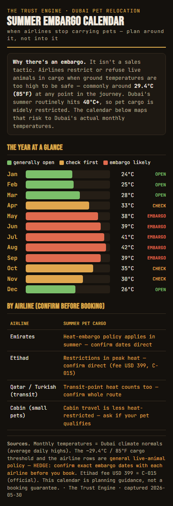
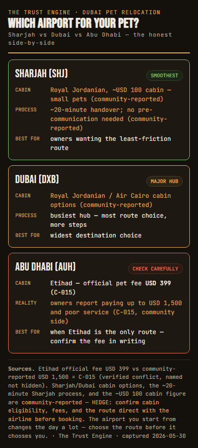

Visual Evidence Architecture
Proof you can see on the page, beside every claim. The dated official-source screenshot, the real process photo, the phone-rendered infographic — not stock decoration.
Why this skill
A frightened reader does not trust words. They have read ten sites that all say "trusted", "experienced", "stress-free" — and one quoted them an outrageous price anyway. By the time they reach your page, a claim they cannot see proven is worth nothing.
Visual Evidence Architecture puts visible proof beside every claim: the regulator's own page shown as a dated screenshot, the real crate and handover instead of a stock dog, the data drawn as an infographic that works on a phone.
Evidence with a job
Each visual must prove what the text can only assert:
| The text says (assertion) | The visual proves (evidence) |
|---|---|
| "We handle MOCCAE documentation" | a dated screenshot of the stamped MOCCAE certificate |
| "There's a release fee" | the official MOCCAE page showing 500 AED C-003 |
| "Etihad's fee is disputed" | the official Etihad page (USD 399) beside the community USD 1,500 C-015 |
| "Your dog flies safely" | a real photo of your crate and handover — not stock |
Screenshots are proof
A screenshot is proof only with a date, an official source URL, and a C-ID — placed beside the claim (the proof interstitial). The date is the whole point: it shows the rule existed on that day. (That is why capture stays manual — a bot fetch has no human-verifiable date.)
an undated image, or a "view source" link the wary reader never clicks
"MOCCAE's own page: 500 AED release fee — moccae.gov.ae · captured 2026-05-30 · C-003", beside the claim
Real photos beat stock
Stock "happy customer" photos are literally ignored — eye-tracking shows readers skip them as ad-like P-39. Real photos of the real process convert: 37signals' A/B test lifted paid signups +102.5% by swapping a generic image for a real person M-37.
a stock golden retriever on a white background
this operator's real crate, vet titer check, and DXB handover
The infographics
The reusable data visuals are built phone-first — they must render at 390px with no horizontal scroll, every figure sourced (C-ID or honest hedge). Both were render-checked at 390px (real output):


The 4 page briefs
The skill's real output — each gap page's visual brief (data/visual-brief-4-pages.md), every page carrying ≥1 proof-visible screenshot:
| Page | Proof-visible screenshots | Infographic |
|---|---|---|
| Airport confiscation | 2 (C-019, C-003) | — |
| Summer embargo | 1 (airline policy) | embargo calendar |
| Titer cost | 1 (C-001, the absence) | cost-range bar |
| Airport comparison | 1 (C-015) | airport table |
| Total | 5 · every page ≥1 | 2 built |
The honest absence
The hardest case is the titer-cost page, where the proof is that no official price exists. You don't invent a number — you screenshot the official page showing the absence and caption it honestly.
Keeping proof genuine
The failure mode is a page that looks evidenced while proving nothing. Three defences:
- Every screenshot is dated and from the live official source — undated or third-party = an image, not proof.
- Every visual proves a specific claim (with a C-ID) — decoration is cut.
- Every infographic is render-checked at 390px — a desktop-only graphic fails this phone-first market.
The audit re-checks 20% blind; an undated screenshot or a stock photo passed as proof, or an infographic that breaks at 390px, is a hard fail.